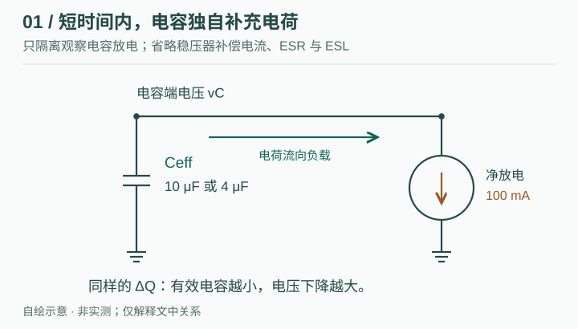
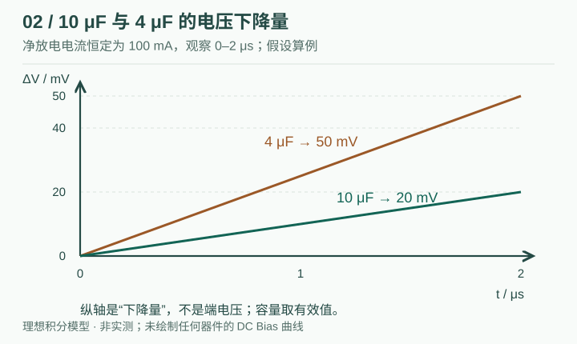

高介电常数陶瓷电容的容量会随施加的直流电压变化。两颗都标着 10 μF、相同耐压和温度特性的电容，也可能有不同的偏压曲线，需要按完整料号查厂商资料。
读曲线时把测试条件放在一起
记录封装、介质、额定容量、耐压及实际直流电压，再查 DC bias 曲线。如果给出的是相对变化率，需要确认曲线以哪种测量条件为基准。高介电常数类型还应核对温度、容差和老化条件。
用有效容量重算一次
假设某个完整料号在工作偏压下的有效容量为 4 μF，短暂承担 100 mA、持续 2 μs 的净放电电流，理想电容压降 ΔV = I × Δt / C 约为 50 mV。若直接用标称 10 μF 计算，只会得到 20 mV。
这是一组假设值。实际瞬态还受 ESR、ESL、回路寄生参数以及电源响应影响，需要与实测波形比较。


耐压升高后仍要回到料号
选更高耐压或更大封装，可能改善工作点下的有效容量，但改善程度要由对应曲线确认。C0G/NP0 与 X5R、X7R 的电压特性和可实现容量不同，应按用途选择。
替换料也要重查
把关键电容的完整料号和容量依据写入 BOM。对于 LDO 输出电容、开关电源滤波和采样参考去耦，核对器件要求的最小有效容量与 ESR 范围。替换后按原工况复测稳定性和负载瞬态。